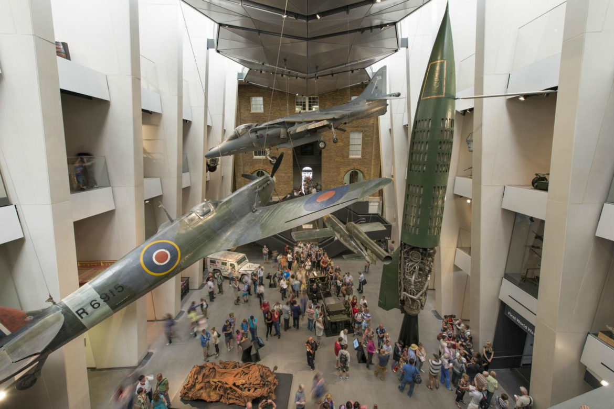
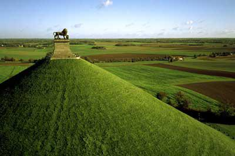
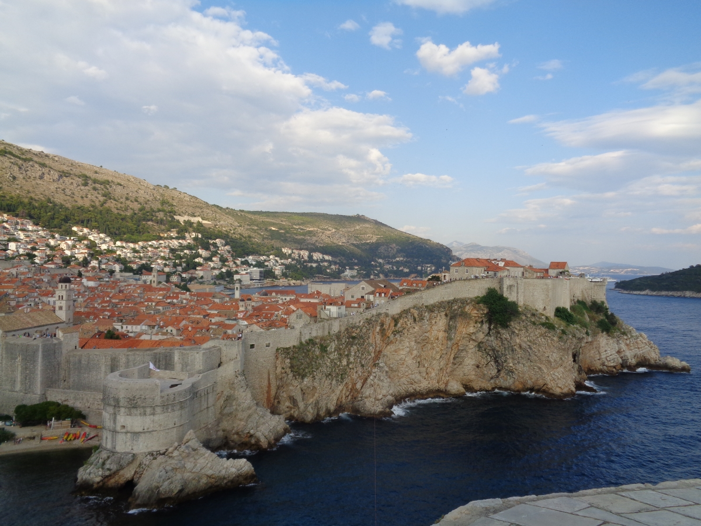
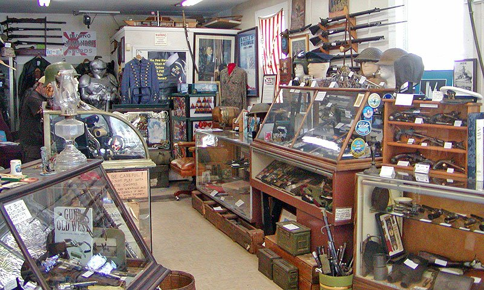

Price vojne historije
Dozivite nezaboravno iskustvo
Upoznajte historiju na potpuno novi nacin
O projektu
Ukratko o nama
Projekt Prica vojnih muzeja nastao je kao odgovor na nedostatak posvecenosti turistickih agencija ljudima kojima je strast vojska i vojna historija. Budimo posteni, skoro cjelokupna historija ljudskog roda ponajvise je obiljezena ratova i pokusajima pojedinaca i naroda da zavladaju drugima i drugacijima iz inih razloga. Upravo iz tog razloga, grupa entuzijasta je odlucima da Vam predstavi jedinstevenu ponudu. Princip je jednostavan. Vi nam kazete historijski period kao i zemlju u koju idete (ili vise njih) i mi Vam posaljemo detaljan plan putovanja sa naznacenim mjestima i lokacijama za obilazak. Pored vojnih muzeja, za koje Vam saljemo detaljan put sa naznacenim zanimljivostima i artefaktima od posebnog znacaja , takodje Vam saljemo i digitalnu mapu, sa naznacenim bojnim poljima, vojnim grobljima, spomenicima kao i drugim objektima od znacaja za vojnu historiju. Da ne bi bilo sve toliko militantno ( :) ), u nasu ponudu smo uvrstili i objekte od historijskog znacaja. Pored svega, za clanove Premium paketa, na raspolaganju za Vasa pitanja je i 24h sluzba za podsku, koja operise na preko 20 svjetskih jezika. Takodje, tu smo i da Vam ponudimo konkretna putovanja koja smo mi, samo za Vas isplanirali, kako bi imali puni ugodjaj pri posjeti.
Muzeji
Muzeji predstavljaju moderne riznice materijalnog kulturno-historijskog blaga. Skoro svaki grad u Evropi i Sjevernoj Americi posjeduje muzej ili neku spomen sobu koja ima istu ulogu kao muzej. Obicno su u glavnim gradovima ili regionalnim centrima smjesteni kapitalni muzeji sa blagom koje cesto prelazi regionalne ili drzanve granice. U pricama vojne historije muzeji zauzimaju centralno mjesto jer upravo se u muzejima nalaze najznacajini spomenici i aretfakti kad je u pitanju vojna historija. Muzeji vojne historije, koji se iskljucivo bave njegovanjem vojne historije i vojne nauke uopste nisu toliko cesta pojava. Svaka drzava na svijetu ima svoje oruzane snage, medjutim vecina drzava nema svoj muzej vojne historije nego svoje sjecanje na vojnu historiju njeguje u okviru nacionalni, regonalnih ili gradskih muzeja. U ovom projektu istaknuti su najznacajniji muzeji koji bi mogli biti fin start za dublje proucavanj vojne historije. Bilo da se radi o zemljama Balkana ili Evrope, navedeni su najznacajniji muzeji kao i postavke u muzejima ne vojne prirode koje sadrze respekatbilne zbirke znacajne za vojnu historiju. Uplovite sa nama u uzbudljiv svijet vojne historije kroz njene najreprezentativnije institucije.
Bitke

Bitke predstavljaju fokusne historijske dogadjaje te imaju veliki znacaj kako u samoj historiji ljudskog roda tako i u historiji kao nauci. Bitke i sukobi su cesto mjenjali sudbinu ljudskog roda. Da li bi poznavali Grcku kulturu kakvu danas poznajemo da nije bilo bitke na Maratonu? Zamislite samo da su Rimljani pobjedili Germanska plemena u Teutoburskoj sumi, tog septembra 9.godine n.e. Kako bi slika Evrope drukcije izgledala sa romanizovanom Germanijom. Zamislite da je Napoleon pobjedio kod Waterloo-a. Kakva bi slika Evrope izgledala da su Osmanlije zauzele Bec? Da ne napominjem eventualni neuspjeh Sovjeta u odbrani Moskve u decembru 1941. Price vojne historije odaju pocast tim hrabrim i vode Vas na mjesta najznacajnijih bitaka sirom Evrope.Na Vama je samo da ponesete dobru volju za ucenje i druzenje, vodu i uzinu mi cemo ponijeti :)
Historijske gradjevine
Historijske gradjevine predstavljaju objekte koji su u odredjenom periodu u historiji odigrale znacaju ulogu u vojnoj nauci i praksi. Vidjet cete u stvarnosti foritifikacije cuvene francuske skole, srednjovjekovne zidine, kasarne i stabove, puteve i tunele koji su odigrali krucijelnu ulogu u nekom sukobu. Bilo da je rijec o Dubrovackim zidinama, zidinama Istanbula i Budimpeste, Tunelu D-0, Objektu D-4 i Aerodromu Zeljava, upoznat cete se detaljno sa objektima i znacaju istih, vidjeti geostrateski polozaj te saznati vise o njegovoj historiji.Privilegija je stajati na mjestima gdje se ispisivala historija ljudskog roda.
Druge lokacije
Za kvalitetno proucavanje historije potrebna je logisticka podrska. Na nama je da Vam damo prijedloge hotela, restorana, antikvarnica, galerija i vojnih spomenika gdje mozete da se odmorite, okrijepite, snadbijete artefaktima i uzmete vlastiti dio vojne historije.
Podrska
Na Vama je da uzivate i upoznate mnostvo novih stvari i kreirate pregrst uspomena. Na nama je da brinemo za Vas. Na raspolaganju smo Vam za svako pitanje, imamo soluciju za svaki problem te vrlo komunikativno osoblje sa kojim mozete da caskate, kako o vojnoj historiji, tako i o mnostvu drugih stvari. Da, jako volimo fudbal :).
Druge usluge

Imate problema sa organizacijom putovanja? Ne mozete da nadjete prevoz ili smjestaj? Zelite neki drugi smjestaj pored onoga sto smo Vam mi organizirali? Nemate putno osiguranje? Mi smo tu za Vas. Za navedene i mnoge druge situacije.